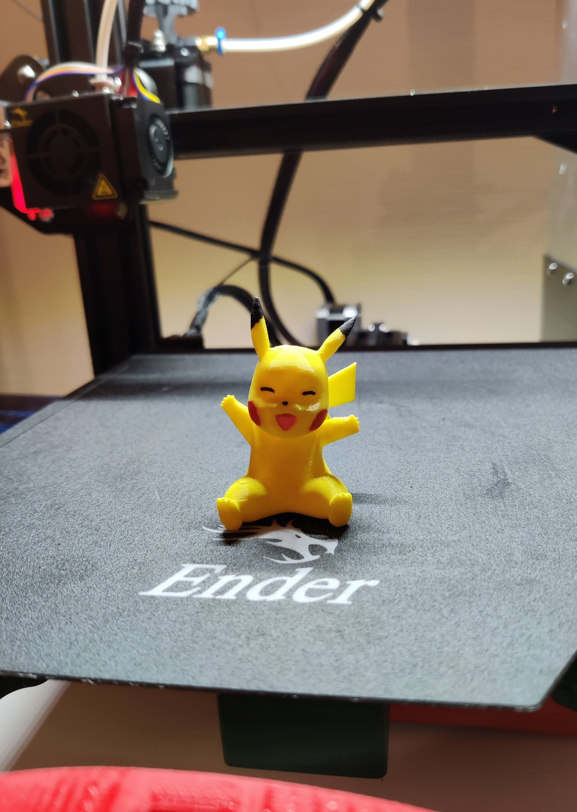
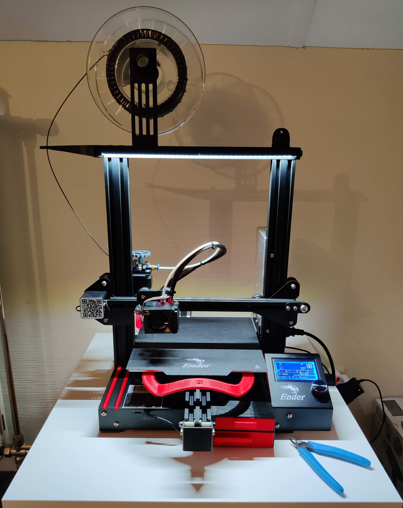

Projecten
Project Systems Engineering & Analysis
In het eerste semester van het 2e jaar cloud - & cybersecurity moesten we voor het van Systems Engineering & Analysis een project uitwerken in team. Ons team bestond uit 4 personen samengesteld uit studenten van de IoT en CSS richtingen.
Als fictieve opdracht moesten we voor Alconet een systeem uitbouwen dat hen in staat stelde om hun koelcontainers te tracen en onderweg informatie te verzamelen.
De overdrachten van een container tussen de verschillende behandelaars moesten geregistreerd worden op dit ingebouwde systeem.
Het systeem moest ook een, vooraf ingeladen, shipping packing list van de container bijhouden en controleren of er zich onderweg fouten voordeden.
Deze fouten moesten dan ook geregistreerd worden op het systeem.
Bij aankomst van de container moest de data die verzameld werd door het systeem ontladen worden in een centrale database. Deze database moest redundant zijn.
De informatie die zich in de database bevond moest weergegeven worden in een simpele applicatie.
Deze applicatie moest bestaan uit een lijst met alle containers, wanneer er zich onderweg een fout had voorgedaan met een bepaalde container moest dit meteen zichtbaar zijn in de applicatie.
Tijdens de uitwerking van de proof of concept hebben we de taken verdeeld. We hadden 5 dagen de tijd en ik heb me vooral beziggehouden met de webapplicatie.
Deze is geschreven in PHP en stond in verbinding met de centale databank. Hieronder kan je enkele screenshots bekijken van deze applicatie:
De samenwerking verliep vlot en het resultaat werd goed bevonden door onze coach.
Hij zei ons dat we de verschillende processen die gevraagd waren door de klant zeer goed hadden vertaald naar onze proof of concept.
Tijdens dit project heb ik kennisgemaakt met hoe het is om als groep iets uit te werken. Hier heb ik geleerd dat de taken goed verdelen, maar ook goed communiceren met elkaar, zeer belangrijk is.
Wat me ook is bijgebleven, is dat je vooral goed wordt in dingen door er in de praktijk mee bezig te zijn. Het is belangrijk dat je een goede basis meekrijgt op de schoolbanken,
maar je wordt pas echt vertrouwd met iets als je er veel mee bezig bent.
3D printing projecten
Geregeld begin ik met kleine 3D print projecten. Dit kan gaan van het verbeteren of aanpassen van een bestaand product tot iets totaal nieuw dat ik zelf teken.
Het tekenen doe ik in SketchUp, hier komt het opleiding digitaal bouwkundig tekenen ook wel van pas. Om de prints helemaal klaar te maken voor de 3D printer gebruikt ik Ultimaker Cura. In Cura kan je vanalles gaan instellen zoals: printtemperatuur, printsnelheid, de temperatuur van het oppervlak waarop je print en nog zoveel meer.
Mijn meest uitgebreide project was het verbeteren van de 3D printer zelf. Zo heb ik een aantal features toegevoegd zoals: LED-verlichting, raspberry pi, kleine lades om onderdelen in op te slaan, camera mount, .... Het grootste deel van de upgrades zijn terug te vinden op Thingiverse.
Soms print ik ook wel een dingen gewoon voor de fun of om de printkwaliteit van de prints te verbeteren. Een voorbeeld hiervan en de printer met de upgrades kan je hieronder bekijken.


Tijdens deze projecten leer ik bij over mijn 3D printer, 3D printen zelf en het digitaal tekenen. Ik streef ernaar om bij elke print de printkwaliteit te verbeteren.
Raspberry Pi projecten
In het verleden heb ik al een aantal projectjes uitgewerkt met een raspberry pi. Zo heb ik al eens een mediacenter van gemaakt waardoor de films en TV-series vanop mijn NAS makkelijk naar de TV gestreamd konden worden. Door het aankopen van een Chromecast werd dit een beetje overbodig dus heeft de pi een andere taak gekregen. Momenteel is deze pi gekoppeld aan mijn 3D printer zodat ik prints kan uploaden en monitoren vanaf een webinterface over het netwerk. Dit gebeurd met behulp van OctoPrint.
Een andere raspberry pi gebruikt ik om de laserprinter op zolder draadloos te maken, zodat iedereen thuis over het netwerk kan afdrukken. Hiervoor heb ik CUPS geïnstalleerd op een raspberry pi zero w.
Bij deze projecten leer ik meer over raspberry pi en al zijn mogelijkheden, maar ook mijn Linux skills gaan erop vooruit.